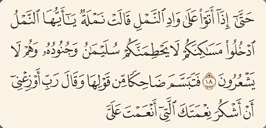

در سال 1940 میلادی کارل فون فریش زیست شناس آلمانی و برنده جایزه نوبل پزشکی
برای اولین بار از نظر علمی کشف میکنه که مورچه ها با همدیگه می تونن ارتباط برقرار کنن
ادوارد ویلسون که یکی از بزرگترین زیست شناسان قرن بیستم شناخته میشه
اولین دانشمندی بود که در سال 1960 کشف میکنه که مورچه ها دارای اندام هایی برای تولید صدا هستن
این صداها پیام هایی مثل خطر ، کمک یا هشدار را منتقل میکنن و به خاطر این کشف برنده جایزه نوبل فیزیولوژی میشه
در سال 2009 پروفسور جرمی توماس حشره شناس برجسته بریتانیایی و استاد دانشگاه آکسفورد
موفق میشه صدای مورچه ها رو با دقت بالایی ضبط و تحلیل کنه و این صدای ضبط شده ی مورچه ها به یکدیگره
و حضرت سلیمان با مورچه حرف نزد بلکه خداوند در آیه 18 سوره نمل میگه :
و در زمان نزول قرآن هیچ کسی نمی تونست به چنین ویژگی هایی دقیق و پیچیده ای از مورچه ها پی ببره
این اشاره علمی قرآن به رفتار های اجتماعی و ویژه ی مورچه ها آیا تصادفیه ؟